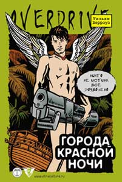

Уильям Берроуз • Города красной ночи • Перевод: Артем Аракелов • overdrive • 20.03.2003

Роман Уильяма Берроуза «Города Красной Ночи» (1981) – первая часть трилогии, увенчавшей собой литературное творчество великого американского писателя. Уникальное произведение, совместившее в себе приемы научной фантастики, философской прозы и авантюрного романа «Города Красной Ночи» оказали и продолжают оказывать огромное влияние на мировое искусство.
Пресса
Владимир Кирсанов. Рецензия на книгу Берроуза «Города красной ночи» (gay.ru)
“Города красной ночи” (1981) – первая часть романной трилогии, которой Уильям Берроуз подводит своеобразный итог своей литературной карьеры, впервые выходит в России. Возможно, что в этой книге вы найдете отголоски всех идейных, изобразительных и даже бытовых открытий, которые Берроуз сделал для себя на протяжении 83-летнего творческого пути. Это, прежде всего, – увлеченное исследование наркотических и коматозно-сексуальных практик в однополых отношениях.
Текст Берроуза – изумительная писательская реконструкция наркотического бреда как одного из способов восприятия действительности. Однополый секс – это другой и по Берроузу не менее продуктивный способ присутствия в жизни… С художественной точки зрения здесь для Берроуза наиболее интересна идея о вирусной природе сексуального желания. Похоть как болезнь – в этом тоже прослеживается характерное для писателя единство восприятия секса и смерти.
…Интересно, что в “…Красной ночи” мы едва ли не впервые встречаем у Берроуза некоторое подобие сюжета, причем захватывающего внимание читателя своей криминально-детективной авантюрной линией. Но основной “сюжет” у Берроуза как всегда лежит далеко за пределами событийного ряда. Он – в брожении мысли и желании плоти, которым нет предела.
Так раскрытие странного ритуального убийства рыжеволосого мальчишки превращается в путешествие по эпохам, пространствам и самым тайным глубинам человеческого подсознания. …Путешествие, в котором открывается главное: “ничто не истина, поэтому все дозволено” – прежде всего, в сексе. В последнем утверждении Уильям Берроуз во многом следует за телемитами и магом Алистером Кроули.
Данила Давыдов. Безупречный монстр Уильям Берроуз (ExLibris)
Гроза литературных филистеров, Уильям С. Берроуз (1914- 1997) продолжает быть частью актуального отечественного литпроцесса в России, поскольку все новые и новые его тексты переводятся и публикуются на русском впервые. Одно издательство завершает одну трилогию – в переводе Д.Волчека, другое начинает выпуск другой трилогии – в переводе А.Аракелова.
Невольно напрашивающиеся соображения о духе соревновательности и т. п. наталкиваются на принципиальную разницу исходного материала: коллажность “лондонского цикла” (“KOLONNA Publications”) не вполне сравнима с метареализмом итоговой триолгии (“Ультра.Культура”). Переводческая манера Волчека, подчеркивающего взрывные, сверхлогические, эзотерические аспекты оригинала отличается от менее известной нам манеры Аракелова, настоятельно вытягивающего сюжет из неевклидова пространства берроузовского повествования.
“Порт святых”, как и следовало ожидать от финальной книги цикла, несколько меланхоличен и даже (о, ужас!) сентиментален (в этом, пожалуй, роман может сравниться только с поздним берроузовским сочинением “Мое образование. Книга снов”). Это особый лиризм перверсии, лиризм человека, ставшего “другим”, “чужим”: “По течению реки прибыли в потерянный город под луной, расплывчатый ночной рынок… Трясущийся фильм смещается… Далекий вечер уютная недостача морской ветер на моем лице вспоминая тени я повернулся и пошел назад к пустому рынку… Удивительно, какие вещи можно отыскать в старых бульварных журналах… серебристые пятна от бассейна сад виллы наши тела отражают… дорожка на заднем плане дом 1920-х годов… комната под черепичной крышей мятые брюки нижнее белье пес лает в саду…” Медитации монтажа, попытка нанизать корпускулы мироздания на повествовательную нить.
Дикие мальчики не остепенились, но по сравнению с одноименным романом стали соразмерны читателю. Фаллоцентризм и наркократия никогда не служили отрицанием Бога, скорее напротив. “Порт святых” заставляет задуматься о Берроузе как о мистическом писателе.
Этот безупречный монстр всегда утопичен (или антиутопичен, без разницы). Но “Города красной ночи” отличаются этим в особенности. Загадочная болезнь, грозящая уничтожить мир, пиратская вольница, отменяющая любые репрессирующие личность правила, хитроумный частный детектив, все больше и больше запутывающийся в расследовании, – все эти и некоторые другие линии, каждая из которых могла бы стать у другого писателя основой отдельной книги, сходятся друг с другом, затем расходятся так, что за ними невозможно уследить… Сад расходящихся тропок и сад пыток объединяются в одно целое, чудовищное и восхитительное.
Кажется, ключ к роману – в диалоге частного детектива Снайда с “церэушным панком” (бывшим доктором) Пирсоном: “-…И вы хотите, чтобы я написал сценарий. – Именно. Вы и так уже написали достаточно для того, чтобы дело завертелось”.
Достаточно фиксировать броуновское движение похотливых частиц зла, чтобы они обернулись свободой. “Ничто не истина. Все дозволено”. Этот мир открыт для радикального переоборудования. Его для этого открыл Уильям С.Берроуз, сценарист.
Евгений ИZ. Кто желает побороть лихорадку? (topos.ru)
Русскоязычное наследие повлиявшего на многих видных деятелей продолжает пополняться. В красивом и правильном оформлении издана первая книга берроузовской поздней трилогии — «Города красной ночи» (1981 г.). Серия «Overdrive» свежего издательства «Ультра. Культура», четко позиционирующего свои лево-радикальные и анархистские пристрастия, предлагает западную литературу, ужасную для отцов и занимательную для детей (старшего возраста). В серии вышла книга героической женщины Лидии Ланч «Парадоксия», вот-вот выйдут «Дневник Тернера» Эндрю Макдональда и нашумевший «Американский психопат» шумного Брета Истона Эллиса, а также планируется до конца года издать оставшиеся книги трилогии Берроуза — «Пространство мертвых дорог» и «Западные земли». Уважаемый Илья Кормильцев (в данном случае ответственный редактор), кажется, после несомненного успеха «Бойцовского клуба» Паланика решил не отступать и не сдаваться. Компромисс не для нас. В самом деле, пора уже обогатить словесности палитру.
Что касается «Городов красной ночи», то это лишний повод убедиться в том, насколько последователен и несгибаем был Берроуз в своем образе творческой активности. Читая этот достаточно объемный текст, со всей очевидностью понимаешь, что с годами проза Берроуза стала превращаться в герметичную и чрезвычайно четко акцентированную мозаику интрапсихической реальности автора, в замкнутую систему. И в то же время, несмотря на перманентную, упорную издевательски-сюрреальную сатиру корифея битников, ему невозможно отказать в трезвости и адекватности восприятия наличествующей социально-политической действительности. Впрочем, берясь писать о Берроузе, термин «действительность» так и тянет заключить в темницу кавычек.
«Города красной ночи» по стилю — махровая берроузовщина: сумасшедший микс из научной фантастики, магического реализма, гротескного порно-ужастика, детективного триллера и исторического романа. Несколько параллельных сюжетов движутся к точке повествования (в романе это — центральная из трех «книг»), в которой им предстоит слиться и переплавиться в одно пульсирующее бредом и прозрениями чудовищное полотно, образовать параноидальный омут хаотических образов. Поначалу все относительно доступно: вот пиратская опиумная эпопея на восточном побережье Америки в 18 веке, вот частный детектив Клем Снайд получает задание найти пропавшего юношу, вот либертарные коммуны в духе капитана Миссьона укрепляются в районе Панамского перешейка, готовясь к войне с испанцами, англичанами и французами (вообще со всеми государственными машинами), вот появление странного вируса Б-23, косящего под скарлатину и вызывающего масштабную эпидемию, называемую Красная Лихорадка. Но Берроуз не был бы Берроузом и не посвятил бы свою книгу, помимо прочих, Хумбабе — Богу Отвращения, Темному Ангелу, Спящему Змею, Пазузу — Богу Лихорадок и Чумы, Лилит, Икс Таб — Богине Повешенных, Осирису и Звездному Змею, если бы вознамерился идти на поводу у линейной последовательности повествования, пошловатых сюжетных интриг и той простоты, что хуже воровства. Весьма скоро окажется, что у персонажей, порою становящихся героями романа, нет четких рангов положительности или отрицательности. Все может обернуться всем, каждый способен превратиться в каждого, взаимозаменяемость угрожает стать тотальной. Масса сильных сцен базируется на шоке узнавания, на гиперреальных синхронистичностях, на многослойных эффектах дежа-вю. И если вы способны продираться сквозь эти вирусные джунгли без излишней предвзятости, то в определенный момент возникнет особенная читательская ситуация, когда на неопределенный срок само чтение будет базироваться исключительно на доверии к фигуре автора. После этого — прорыв осмысленности, прояснение оптики, обнажение замысла. Затем — новый виток плотнейшего галлюциноза. Естественно, ситуация, когда персонаж приходит в себя в клинике и осознает, что все предыдущее приключение было лишь болезненным больничным бредом — для литературной традиции тривиальна. Однако, в случае с Берроузом и «Г.К.Н.» все не так просто и не так плоско. Реальны только внутренние отношения (даже — соотношения масс и фактур), только осмысленные идеи, но не восприятия и уж ни в коем случае не буквализованные «действительности». Местами кажется, что в романе реален один только распадающийся от собственной радиоактивности язык. Одна из глав «книги второй» называется «Язык — это мы». И, как всегда, бесстрастный рефрен Хасана-и-Саббаха, Старца С Горы: «Ничто не истина. Все дозволено».
Да, в романе происходит все тот же Голый Ланч, по страницам сквозь черные дыры во времени-пространстве идут уже знакомые читавшим Берроуза Кики, Али, Пако, Хозелито, Энрике, Одри Карсон, однажды мелькает сам доктор Бенвей; нескончаемая череда пляшущих голых мальчиков, совокупляющихся юношей, пиратов и матросов; бесчисленные повешения, линчевания, удушения. «Одри ощутил движение пола под ногами и обнаружил, что стоит в центре громадной паутины. В ту же секунду он понял ее назначение и познал причину всех мучений, страха, секса и смерти. Все это нужно для того, чтобы держать людей в рабстве физического тела, пока чудовищный матадор размахивает в небесах своей красной тряпкой, держа наготове меч смерти.» И как всегда — множество оживающих картин, природные пространства, городские улицы, поданные в фактурной достоверности, в интонациях освещения, в звуковых гаммах, в запахе, во вкусе, в неповторимом ощущении запертости в ностальгической тюрьме времени.
Теория возникновения белой расы, шесть Городов Красной Ночи: Тамагис, Ба-адан, Йасс-Ваддах, Вагдас, Науфана и Гхадис. Города враждующих идеологий, конкуренции и коммерции, тирании и рабства, господства науки, господства иллюзии. Символические чакры древней цивилизации — на паломничество от Тамагиса до Гхадиса «может потребоваться не одна жизнь». А в завершении трипа — война. Как Берроуз пишет в предисловии по поводу упадка земной цивилизации: «Ваше право жить там, где вы хотите, в обществе, выбранном вами, и по законам, с которыми вы согласны, погибло в 18 веке вместе с капитаном Миссьоном. Воскресить его смогут только чудо или катастрофа».
Чудес в «Городах» хватает с лихвой: обмен личностями, конвейер реинкарнаций, трансмиграции сознания, убийства при помощи включения чакры смерти, управляемые половые мутации, магическая дедукция и так далее. Катастрофа также занимает центральное место: сначала это зловещая черная дыра (в одной из интерпретаций она оказывается анусом инопланетной сущности), вызывающая радиоактивное Красное Сияние в ночном небе, затем — освободительная партизанская война в шести городах.
В финале книги видны явные антивоенные и антинасильственные мотивы автора. Необычность его языка для широкой аудитории предельно плотно вуалирует подобные мотивы, но в случае Берроуза говорить о широкой аудитории неуместно. Она достаточно многочисленна, но никак не широка. Слишком широкую, как говорится, хочется сузить.
В романе, в характерной для Берроуза манере, ведется пальба по многим мишеням и священным коровам одновременно. Язвительные пассажи и обличительное вдохновение по поводу социальных процессов, жесткая политическая критика, памфлетный нокаут морализаторской культуры, неподражаемый юмор в адрес опиатных наркоманов, довольно своеобразные издевательства над порнографическим изводом и над коснеющей литературной «фабрикой грез». Названия глав — отдельное произведение искусства. Берроуз ни на секунду не сомневался в том, что мир заражен и болен, о том и писал, и что бы там ни говорили менеджеры по продажам гарри поттера и прочих тамагочи, а он считал своей миссией (и как дипломированный врач тоже) бороться с глобально нездоровой лихорадкой.